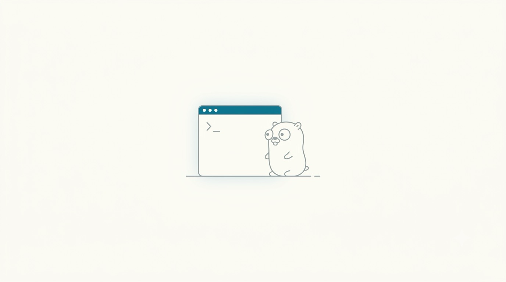

Chapter 01 · Foundations
Why Go? A Philosophy, Not Just a Syntax
Before we look at a single line of code, let's ask the question a good physicist always asks first: what problem is this thing actually solving? Every design decision in Go — the things it leaves out as much as the things it includes — falls out of one problem, cleanly stated.
Here's a game I like to play with any new tool: guess what it was built to fix before you're told. Go's answer turns out to be surprisingly human, not technical.
The problem: too many people, too much code, too little patience
Go was designed in 2007 at Google by Robert Griesemer, Rob Pike, and Ken Thompson, and released publicly in 2009. Google had thousands of engineers sharing enormous C++ codebases. Builds took minutes to hours. Every engineer wrote C++ slightly differently — some used exceptions, some didn't; some used one style of class hierarchy, some another. Reading someone else's code became a small research project. None of this was anyone's fault; it's just what happens to a flexible, feature-rich language at the scale of a whole company.

A clean, modern editorial illustration depicting the origin of a simple, pragmatic programming language: three small figures sketching a single, uncluttered blueprint at a whiteboard, with a giant tangled ball of yarn (representing a huge, slow-to-build software codebase) shrinking into a small neat spool nearby. Muted teal/cyan (#0e7a94) as the single accent color, otherwise soft grey line-art on white. Flat vector, editorial-illustration style, generous whitespace, no text or logos baked in. Target size ~1280x720px, 16:9 landscape; compose for a small on-page figure with the subject centred and safe margins — it is letterboxed into a 16:9 box, so keep nothing important near the edges.
Generate this with your image agent, then drop the file here.
So the designers set themselves an unusual goal for a new language: not "add more power," but remove enough power that a whole company can read each other's code without translation. Every choice downstream — one way to format code, a tiny keyword list, no exceptions, no classical inheritance — traces back to that one goal.
2. Readability at scale — code you didn't write should still look familiar, because there's really only one idiomatic way to write most things.
3. A single, simple deployment story —
go build produces one
statically-linked binary; no runtime to install on the server, no dependency hell.4. Concurrency as a first-class citizen — talking to many things at once (network requests, files, other machines) needed to be ordinary, not an advanced topic.
The shape of the trade-off
Go is a compiled, statically typed, garbage-collected language. Read that list slowly, because each word is a deliberate trade:
| Choice | What it buys you | What it costs |
|---|---|---|
| Compiled to native machine code | Fast programs, one dependency-free binary to ship | No live REPL-style hacking (though go run gets close) |
| Statically typed | Whole classes of bugs caught before the program ever runs | A little more upfront ceremony than a scripting language |
| Garbage collected | You almost never manage memory by hand — no malloc/free | A small, modern, low-pause GC still costs a little CPU |
Notice what's missing from that list on purpose: classical class-based inheritance, exceptions, generics-as-the-default-tool, operator overloading, implicit type conversions. Go has them in far smaller, plainer forms (or leaves them out entirely) because each one, in the designers' experience, bought expressiveness at the price of a codebase nobody could hold in their head anymore.
gofmt, and the entire community uses it without
argument. There is no "tabs vs. spaces" debate in Go — the tool just decides, and every Go file in
the world is formatted the same way. That single, almost boring decision quietly removes an enormous
amount of wasted human argument.
Let's actually run something
Enough philosophy — a physicist wants to see the experiment. Here is a complete, runnable Go program:
package main import "fmt" func main() { fmt.Println("Hello, Go") }
Save that as hello.go and run go run
hello.go. No build step to configure, no project file to write first — the toolchain compiles
and runs it in one motion. We'll unpack every one of those five lines (package,
import, func main) as we go; for now just notice how
little ceremony there is between "I have an idea" and "I can see it run."
Why this matters: almost every "weird" thing you'll meet in Go later — why errors aren't exceptions, why there's no class inheritance, why slices behave the way they do — is Go optimizing for the same four goals above. Once you can see the goals, the decisions stop looking arbitrary and start looking inevitable.